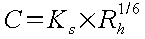

Manuel utilisateur : Les Siphons
Ce module permet de vérifier le fonctionnement hydraulique d'un siphon.
L'exemple de calcul de dimensionnement d'un siphon qui suit correspond à l'exemple « Démo Siphon ». Pour l'ouvrir, il faut cliquer sur ouvrir dans le menu « Siphon »,
ensuite sélectionner « Démo Siphon » dans la fenêtre qui vient d'apparaître,
et bien sûr cliquer sur le bouton « OK » pour valider votre choix.
L'objet de l'exemple est :
de vérifier le fonctionnement d'un ouvrage siphon implanté à l'aval d'une canalisation de diamètre 800 mm (fil d'eau arrivée NGF : 100)
de déterminer la cote du fil d'eau de départ à l'aval du siphon.
Cet ouvrage d'un linéaire de 135 m comporte 4 coudes à 90° (rayon 2 m), il doit permettre le transfert d'un débit maximum de 420 l/s et présenter des conditions de fonctionnement satisfaisantes pour un débit moyen de 100 l/s.
Il faut renseigner Hydrouti sur l'ensemble des caractéristiques de l'ouvrage, afin de pouvoir vérifier qu'il fonctionne correctement d'un point de vue hydraulique.
Il faut saisir les valeurs :
du diamètre,
de la pente,
du coefficient de Strickler,
et de la cote du radier ZRam au droit de l'entrée dans le siphon.
Les valeurs choisies pour notre exemple apparaissent sur la figure ci-dessus.
De la même manière que pour la conduite amont, il faut saisir les valeurs :
du diamètre,
de la pente,
du coefficient de Strickler,
et de la cote du radier ZRav au droit de la sortie dans le siphon
Les valeurs choisies pour notre exemple apparaissent sur la figure ci-dessus.
Pour le siphon, il faut donner les caractéristiques de la conduite, le débit de calcul, et un coefficient de singularités :
diamètre,
coefficient de Strickler,
longueur développée,
débit maximum (débit pris en compte pour le calcul),
coefficient de singularité(s).
Pour le coefficient de singularité(s), il est possible de saisir directement une valeur ou bien d'utiliser l'option « Saisie coudes… » en appuyant sur le bouton du même nom.
Il est possible de créer deux types de coudes (cf chapitre « 2.4.7.2.3 »« - »« Pertes de charge singulières dans le siphon (coudes) » ) :
Les coudes arrondis, K étant calculé ainsi :
avec α, D et ρ paramètres présentés sur la figure suivante,
Les coudes à angle vif, K étant calculé ainsi :
avec θ paramètre présenté sur la figure suivante,

Dans notre exemple, nous avons ajouté un coude arrondi avec un angle α égal à 50°, et un rayon de courbure ρ égal à 5m. Et nous avons également ajouté un coude à angle vif avec un angle θ égal à 45°.
L'ajout de coudes se fait simplement en cliquant sur les boutons « Ajout coude arrondi » ou « Ajout coude angle vif ». Il est possible de supprimer un coude en cliquant sur le bouton « Supprimer ».
Le calcul de vérification du fonctionnement hydraulique est en réalité un simple calcul de perte de charge, qu'on effectue pour le débit maximum saisi précédemment (cf. « 3.4.3.3 »« - »« Siphon » ).
Ce calcul effectué pour le débit maximum, il est conseillé de poursuivre par l'examen des conditions hydrauliques créées par les différents débits que l'on risque de rencontrer; on devra s'assurer que dans tous les cas la vitesse d'autocurage est atteinte; on examinera également si des risques d'entraînement d'air se présentent, et dans ce cas, les formes de l'ouvrage de tête seront adaptées en conséquence.
Elle est calculée en utilisant la formule de Chézy (cf « chapitre »« 2.6.1.1 »« - »« Formule de CHEZY » ) :

|
C |
coefficient de proportionnalité qui peut se calculer par les formules de Bazin ou de Manning-Strickler |
|
Rh |
rayon hydraulique de la section (en m) |
|
I |
pente longitudinale du canal (en m/m) |
|
V |
vitesse en m/s |
où C est donné par diverses formules dont les plus utilisées sont les suivantes :
|
Manning-Stricklervoir « chapitre »« 2.6.1.3 » |
 |
Ks coefficient de Strickler caractérisant la rugosité des parois. |
|
Bazin voir « chapitre »« 2.6.1.2 » |
|
γ coefficient caractérisant la rugosité des parois |

Hydrouti utilise uniquement la formule de Manning-Strickler. L'expression de la perte de charge linéaire par unité de longueur est la suivante :
|
U |
vitesse en m/s |
|
Rh |
rayon hydraulique de la section (en m) |
|
Ks |
coefficient de Strickler |
Pour notre exemple, nous obtenons une perte de charge linéaire égale à 0.456 m (cf. « 3.4.4.3 »« - »« Résultats »« , Perte de charge linéaire »).
Les pertes de charge correspondant à l'élargissement brusque à l'entrée et au rétrécissement brusque à la sortie du siphon s'expriment respectivement par les formules suivantes :
|
A l'entrée |
|
|
A la sortie |
|
Dans notre exemple, la perte de charge à l'entrée est égale à = 0.030 m (cf. « 3.4.4.3 »« - »« Résultats »« », Perte de charge en entrée) et la perte de charge à la sortie est égale à = 0.018 m (cf. « 3.4.4.3 »« - »« Résultats » , Perte de charge en sortie).
Les pertes de charge singulières sont exprimées sous la forme :
avec K : coefficient de singularité(s).
Dans notre exemple, nous avons un coefficient K égal à 0.541, nous en déduisons donc la perte de charge due aux coudes : PDCcoude(s) » =0.033 m (cf. « 3.4.4.3 »« - »« Résultats » », Perte de charge dans les coudes).
Hydrouti effectue la somme de ces pertes de charge évaluées pour le débit maximum et la compare à la dénivelée disponible entre l'entrée et la sortie du siphon. Cette dénivelée est en général fixée par les exigences du tracé amont et aval de l'émissaire. La perte de charge totale doit naturellement être inférieure à la dénivelée disponible.
La perte de charge totale est égale à 0,538 m, alors que la perte de charge admissible (dénivelée disponible) est de 1 m : le dimensionnement est donc acceptable. La cote du fil d'eau de départ peut être ramenée à 99.40.
La fenêtre graphique représente de façon symbolique l'ouvrage. Les hauteurs représentant la perte de charge totale et la perte de charge admissible sont à la même échelle afin de pouvoir les comparer.